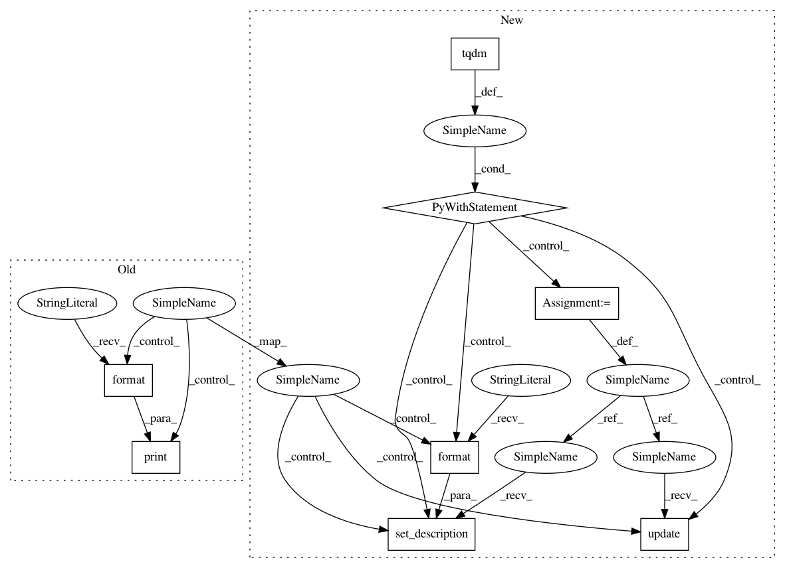

fd723d719ddb49b66a5084215343de763a40083d,trainer.py,Trainer,train_one_epoch,#Trainer#Any#,154
Before Change
// print to screen
if i % self.print_freq == 0:
print(
"Epoch: [{0}][{1}/{2}]\t"
"Time: {batch_time.val:.3f} ({batch_time.avg:.3f})\t"
"Train Loss: {loss.val:.4f} ({loss.avg:.4f})\t"
"Train Acc: {acc.val:.3f} ({acc.avg:.3f})".format(
epoch, i, len(self.train_loader),
batch_time=batch_time, loss=losses, acc=accs)
)
// log to tensorboard
if self.use_tensorboard:
log_value("train_loss", losses.avg, epoch)
After Change
accs = AverageMeter()
tic = time.time()
with tqdm(total=self.num_train) as pbar:
for i, (x, y) in enumerate(self.train_loader):
x, y = Variable(x), Variable(y)
self.batch_size = x.shape[0]
self.reset()
// initialize location vector
l_t = torch.Tensor(self.batch_size, 2).uniform_(-1, 1)
l_t = Variable(l_t)
// extract the glimpses
log_pi = 0.
for t in range(self.num_glimpses - 1):
// forward pass through model
self.h_t, mu, l_t, p = self.model(x, l_t, self.h_t)
// accumulate log of policy
log_pi += p
// last iteration
self.h_t, mu, l_t, p, b_t, log_probas = self.model(
x, l_t, self.h_t, last=True
)
log_pi += p
// calculate reward
predicted = torch.max(log_probas, 1)[1]
R = (predicted == y).float()
// compute losses for differentiable modules
loss_action = F.nll_loss(log_probas, y)
loss_baseline = F.mse_loss(b_t, R)
// compute reinforce loss
adjusted_reward = R - b_t
log_pi = log_pi / self.num_glimpses
loss_reinforce = torch.mean(-log_pi*adjusted_reward)
// sum up into a hybrid loss
loss = loss_action + loss_baseline + loss_reinforce
// compute accuracy
acc = 100 * (R.sum() / len(y))
// store
losses.update(loss.data[0], x.size()[0])
accs.update(acc.data[0], x.size()[0])
// compute gradients and update SGD
// a = list(self.model.rnn.parameters())[0].clone()
self.optimizer.zero_grad()
loss.backward()
self.optimizer.step()
// b = list(self.model.rnn.parameters())[0].clone()
// assert(torch.equal(a.data, b.data))
// measure elapsed time
toc = time.time()
batch_time.update(toc-tic)
pbar.set_description(
(
"{:.1f}s - loss: {:.3f} - acc: {:.3f}".format(
(toc-tic), loss.data[0], acc.data[0]
)
)
)
pbar.update(self.batch_size)
// log to tensorboard
if self.use_tensorboard:
log_value("train_loss", losses.avg, epoch)
log_value("train_acc", accs.avg, epoch)
def validate(self, epoch):
Evaluate the model on the validation set.
In pattern: SUPERPATTERN
Frequency: 3
Non-data size: 8
Instances
Project Name: kevinzakka/recurrent-visual-attention
Commit Name: fd723d719ddb49b66a5084215343de763a40083d
Time: 2018-01-23
Author: kevinarmandzakka@gmail.com
File Name: trainer.py
Class Name: Trainer
Method Name: train_one_epoch
Project Name: emedvedev/attention-ocr
Commit Name: 4bb608662475ecf87dc773a6a1c6914a6c374597
Time: 2017-01-10
Author: sivanke11@gmail.com
File Name: src/model/model.py
Class Name: Model
Method Name: launch
Project Name: kevinzakka/recurrent-visual-attention
Commit Name: fd723d719ddb49b66a5084215343de763a40083d
Time: 2018-01-23
Author: kevinarmandzakka@gmail.com
File Name: trainer.py
Class Name: Trainer
Method Name: validate